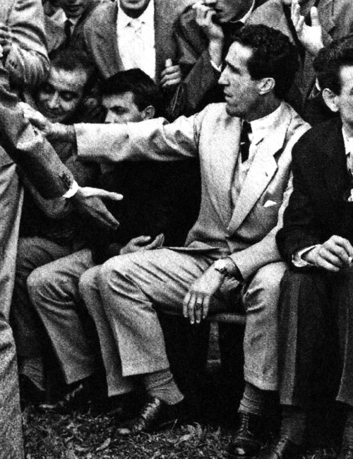
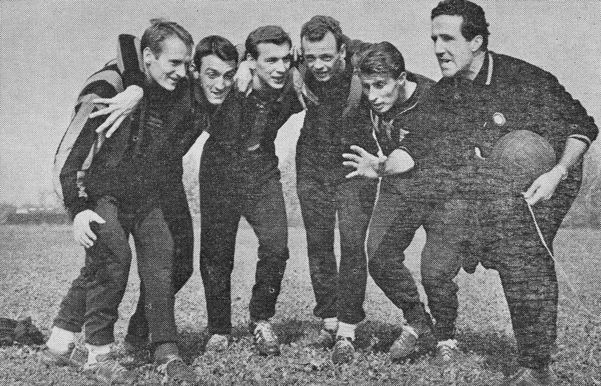
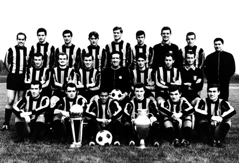
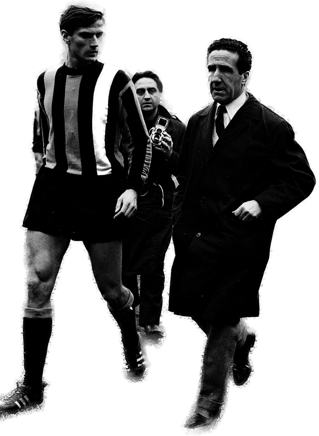

HELENIO HERRERA EN EL BANQUILLO DE SAN SIRO, h. 1961 · FOTO: GINO BEGOTTI, DOMINIO PÚBLICO
HELENIO HERRERA
ENTRENADOR · 1960–1968
VESTUARIO · RECREACIÓN
ESCUDO GENÉRICO, NO OFICIAL

HERRERA CON SUS JUGADORES EN EL ENTRENAMIENTO, h. 1961 · AUTOR DESCONOCIDO, DOMINIO PÚBLICO
INTER 1965-66 CON SUS TROFEOS · AUTOR DESCONOCIDO, D. P.
FACCHETTI Y HERRERA, 1964-65
AUTOR DESCONOCIDO, D. P.
QUIEN NO LO DA TODO,
NO DA NADA.
CLASE
+ PREPARACIÓN
+ ATLETISMO
+ INTELIGENCIA
= SCUDETTO
RECREACIÓN
VEA.
FOTOS: GINO BEGOTTI Y AUTORES DESCONOCIDOS · DOMINIO PÚBLICO (ITALIA), VÍA WIKIMEDIA COMMONS
VESTUARIO, CARTELES Y COPAS: RECREACIÓN